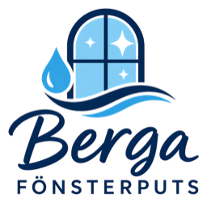

Berga Fönsterputs
VI SER FRAM EMOT ATT TRÄFFA DIG
Din arbetsintervju
Hämtar din inbjudan…
Datum och tid
Längd
Plats
Passar tiden för dig?
Ja, jag kommer
Nej, tiden passar inte
Bekräfta mitt svar
Försök igen